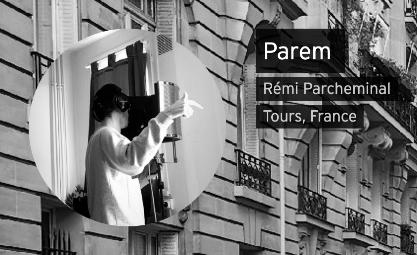

Né le 25 novembre 1996 à Tours, d'une mère toxicomane et d'un père alcoolique. Parem a connu une enfance haut en couleur. Pour vous dire, alors qu'il n'avait que 6 mois, il avale sa première goutte d'alcool. Effectivement sa mère pensait que plus il commencerait tôt la boisson, plus il serait résistant à l'alcool. Et donc, qu'il deviendrait un homme viril très vite. Mais je vous laisse découvrir directement l'histoire de Fabienne Defendi.
Rémi était un enfant comme beaucoup d'autres à son âge, jovial et mignon. On le surnommait le petit au boucle d'or, tellement il avait une petite bouille toute mignonne avec ses bouclettes blondes. Mais Rémi n'était pas aimer de tout le monde comme les adultes le trouvait mignon à craquer. Les autres enfant étaient jaloux de lui. C'est à ce moment là que l'histoire commence... Les autres enfants prennaient un malin plaisir à rendre triste Rémi pour qu'il ne soit plus mignon. Il se moquait de lui à longueur de journée. Alors Rémi se refugiât dans son palais mental. Cet acte qui se fît dans une souffrance des plus terribles sera l'essence même de son art futur. Dans un tourbillon de pensée, il prit le temps de les comprendre, les analyser, les traiter pendant plusieurs années. Ces pensées qui le tourmentaient hier, sont aujourd'hui la source de ses textes. Il réussit à les exorciser par sa rage et la puissance de ses textes.
Je vous ai parlé de sa mère mais vous n'êtes pas prêt à découvrir les horreurs que son père a pu lui commettre. Alors que le jeune Parem n'avait pas encore soufflait sa deuxième bougie. Un soir d'hiver, son père buvait des bières avec ses amies. Lors de la soirée, sa bière tombat sur le lac gelé en contre bas. C'est alors qu'il lui ordonna d'aller chercher la bière bloquait sur la glace. Face au yeux d'alcoolique de son père, Parem n'eut d'autre choix que de soumettre aux ordres. Il alla chercher la bière de son père en couche.
Parem n'est pas le seul enfant de se couple déchéant. Enzo Parcheminal est le grand frère, d'une beauté inégalé sur terre, il fut la note d'espoir auquel Rémi pu se raccrocher dans son enfance. Lui aussi, a une grande carrière musicale avec des hits que tout le monde connaît.
Allez directement sur son soundclooud : https://soundcloud.com/r-mi-d-parcheminal
Rémi vous aime. Il adore son public, vous pourrez sans doute le rencontrer prochaine !
Il est le plus grand rappeur de tout les temps !